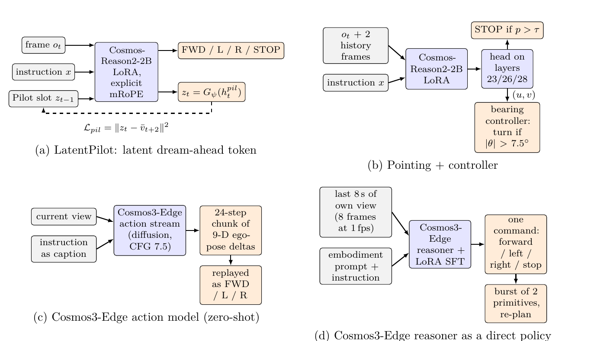

Evaluating Four Approaches to Vision-and-Language Navigation
An experimental study on a single GPU: offline training, zero-shot evaluation in unseen buildings
September 2026 · technical report · an evaluation study, not a new method

What this is
We took four recent ideas for turning a pretrained vision-language or video model into a robot that follows spoken route instructions (R2R-CE, Habitat). We built each one on a single 16 GB GPU and measured how well it navigates in buildings it has never seen. Every trained model gets one round of offline imitation learning and is then evaluated zero-shot. There is no data flywheel, no RL fine-tuning and no on-policy data, so the numbers show each idea's raw capability, not its full recipe.
Latent reasoning
LatentPilot, reimplemented. The model "thinks" in one latent token per step: fewer tokens, faster, native visual reasoning.
Pointing + controller
Inspired by Mistral AI's Robostral Navigate: point at the next waypoint in the image. No RL.
Video diffusion actions
NVIDIA Cosmos3-Edge's action stream, used zero-shot to sample ego-motion from video.
Video reasoner policy
The Cosmos3-Edge reasoner, fine-tuned to answer "what next?" from its own recent video.
SR: stopped within 3 m of the goal by its own decision. OS: came within 3 m at some point. Across all four approaches, stopping, not reaching, is the bottleneck.
The four architectures

Demos, and what failed
closed-loop rolloutthe model drives. decision probethe model answers one question and does not drive. figurea measurement; no video was recorded.
① Latent reasoning (LatentPilot) closed-loop rollout
Why try it: a model that reasons in latent tokens instead of words or extra frames would need fewer tokens, run faster, and reason visually. LatentPilot's single Pilot Token predicts the next-but-one frame and is fed back as memory. Not run: the paper's data flywheel and Stage 2 (scheduled sampling). We evaluate Stage 1 as is.
Left: the expert. Middle: LatentPilot after 10k steps. Right: the fully trained LatentPilot. The yellow line is the live distance to the goal.

What failed: the fully trained model wanders and almost never stops (OS 10.7 % vs 17.3 % for the control)
Most plausible cause: the training shortcut. During training the Pilot slot holds the true embedding of the next frame, which reveals the action just taken. Training accuracy jumps from 78 % without a slot to 98 % with one (92 % vs 78 % at matched steps), so the model learns to read the action off the slot. At test time the slot holds its own prediction and the shortcut is gone. Predicting the future 2.25× better did not help. Loss-balance drift contributes, but an adaptive λ that removed it did not recover navigation. The flywheel and scheduled sampling, which were not run, are what would close this gap.

② Pointing + controller closed-loop rollout
Why try it: Robostral Navigate by Mistral AI points at the next waypoint in the image, turning navigation into grounding. Their 8 B model is trained on 2.4 M trajectories and then with online RL, reaching 77.4 %. We test the raw idea: 2 B, 61 buildings, supervised only, no RL, and a simple geometric controller.
The cyan cross-hair is where the model aims, and the controller turns toward it.
Green is the expert's next waypoint. p(stop) is its STOP probability, and a red border marks a failure.


What failed: under-turning, weak STOP, no recovery
Of 150 episodes, 22.7 % stop at the goal, 8.7 % run out of steps near it, 23.3 % stop in the wrong place, and 45.3 % run out of steps far away.
- Under-turning. When the expert turns, the model predicts FORWARD 39–43 % of the time. Its predicted bearing is 0.42× the true bearing: a regression head hedges toward "straight".
- Weak STOP. STOP is 2.5 % of labels, and the signal sits mid-network (layer 15 AUC 0.72, output 0.44). Only 49 % of its stops land within 3 m.
- No recovery. Imitation only sees expert states. Robostral's RL phase teaches recovery; it was not run.


③ Cosmos3-Edge action model figure
Why try it: a video world model's action head already knows how cameras move. Used zero-shot, with no training.
Left: how often "turn left/right" turns the right way as guidance rises. Right: with full instructions, blue uses the right instruction and orange uses another episode's.

What failed: it ignores the instruction and stalls (OS 7.5 %)
At normal guidance, the right and wrong instructions score about the same (59 % vs 53 %). It was pretrained on short motion captions, not multi-sentence routes, and a fixed "The camera moves forward." prompt did as well (15 %). The motion prior is real (yaw correlation 0.84–0.99), but many sampled chunks contain too little motion to become a single step. Two such chunks in a row end the episode, which happened in 75 % of episodes.
④ Cosmos3-Edge reasoner decision probe
Why try it: a physical-reasoning VLM that sees how the view changed over the last few seconds might decide "what next?" better than a classifier. Zero-shot it answered as a bystander ("A person enters the room…"), so it was fine-tuned on expert decisions.
Each clip shows one model. It plays exactly the video that model receives at one moment of an expert's walk, then shows what the expert did and that model's answer. SFT v1: turn- and stop-heavy data (25 % STOP labels), ~1 s of video. SFT v3: uniform data (5 % STOP), 8 s of video. A v2 run was stopped early and never evaluated.
| SFT v1 | SFT v3 | |
|---|---|---|
| Case A: at the goal. The expert stops. |  v1: stop ✓ v1: stop ✓ |
 v3: move forward ✗ v3: move forward ✗ |
| Case B: mid-route. The expert goes forward. |  v1: turn left ✗ v1: turn left ✗ |
 v3: move forward ✓ v3: move forward ✓ |
What failed: v3 reaches the goal region most often (47.5 %) but never stops there; v1 stops constantly
Most plausible cause: each version copies its training label mix. v1 trained on 25 % STOP and ends 65 % of episodes by stopping in the wrong place. v3 trained on 5 % STOP and rarely stops. Stopping also requires knowing how much of the instruction is done, which 8 s of video cannot show. With no closed-loop training, it never practised recovering. Offline accuracy (63–68 %) did not predict closed-loop success.

Results
| Approach | Variant | n | SR | end-SR | OS | nDTW | NE (m) |
|---|---|---|---|---|---|---|---|
| ① Latent reasoning | Stage 1, learned Gψ | 150 | n/m | n/m | 10.7 | 0.277 | 8.50 |
| ① Latent reasoning | identity Gψ (control) | 150 | n/m | n/m | 17.3 | 0.268 | 8.17 |
| ② Pointing | 16 scans, final layer | 150 | n/r | 13.3 | 14.0 | 0.350 | 7.34 |
| ② Pointing | + history, 61 scans | 150 | n/r | 18.0 | 22.7 | 0.394 | 6.55 |
| ② Pointing | + longer schedule | 150 | n/r | 24.7 | 31.3 | 0.345 | 7.10 |
| ② Pointing | + layer fusion | 150 | 22.7 | 31.3 | 42.7 | 0.323 | 7.22 |
| ③ Edge action | zero-shot, CFG 7.5 | 40 | n/m | n/m | 7.5 | 0.276 | 8.81 |
| ④ Edge reasoner | SFT v1 | 40 | n/m | n/m | 17.5 | 0.365 | 7.41 |
| ④ Edge reasoner | SFT v3, step 1,500 | 40 | n/m | n/m | 47.5 | 0.389 | 6.41 |
| LatentPilot paper | 7B, full split, flywheel | 1,839 | 51.7–54.0 | – | 57.0 | – | 5.3 |
| Robostral Navigate | 8B, SFT + RL | 1,839 | 77.4 | – | – | – | – |
R2R-CE val_unseen. SR: the agent's own STOP within 3 m (standard). end-SR: the episode
ended within 3 m, including by running out of steps. OS: came within 3 m. n/m: not measured, because the
evaluation ended on arrival. n/r: not recoverable from the logs. Thresholds were tuned on this split. n = 40 gives
roughly ±15 points.

Key findings
- Training on privileged future frames can teach a shortcut. LatentPilot's Stage 1 fits its training data by reading the next frame from the Pilot slot, and the shortcut is gone at test time.
- Stopping, not reaching, is the bottleneck. The best pointing model came within 3 m in 42.7 % of episodes but stopped there in 22.7 %. The reasoner reached the goal region in 47.5 % and stopped there in none.
- Offline probes picked the wrong model twice. Rank policies closed-loop.
- STOP lives mid-network: AUC 0.72 at layer 15, 0.44 at the output layer.
- Data first. 6 → 16 buildings tripled the pointing policy's success, and fixing three label bugs took label/expert agreement from 0.69 to 0.97.
BibTeX
@techreport{jain2026vlnexperiments,
title = {Evaluating Four Approaches to Vision-and-Language Navigation:
An Experimental Study on a Single GPU},
author = {Jain, Shubh},
year = {2026},
institution = {GitHub},
url = {https://github.com/ShubhJain007/vln-experiments}
}
This study evaluates LatentPilot (arXiv:2603.29165) and ideas from Robostral Navigate by Mistral AI (arXiv:2607.20785) and NVIDIA Cosmos. All 53 references are in REFERENCES.md.